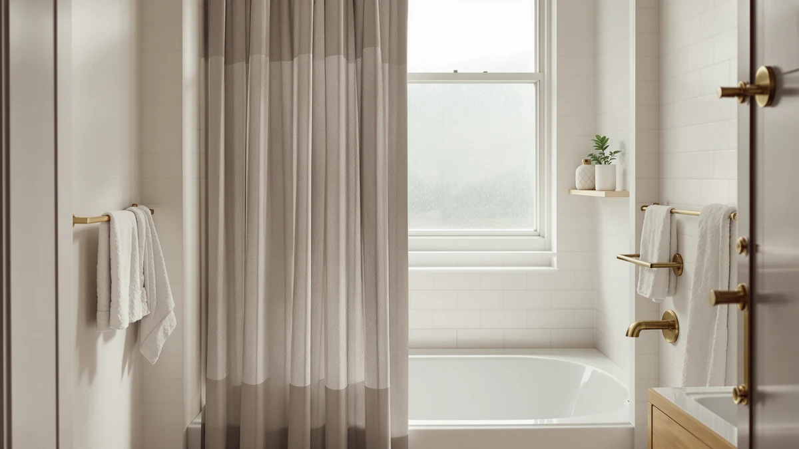

Bean Products Natural Organic Cotton Bathtub Shower Curtain Liner Review (2026): Worth It?
Prices and picks verified as of November 2026. Independent, reader-supported reviews.


Quick Answer
At $72.56, the Bean Products Natural Organic Cotton Bathtub Shower Curtain Liner is the only 100% cotton liner among the four products compared here. Jowels, MYSKY HOME, and BTTN all undercut it on price, but none list an organic cotton construction on their listings.
Our pick: Bean Products Natural Organic Cotton — $72.56 Check Price on Amazon
Bottom line: our top pick is the Bean Products Natural Organic Cotton Bathtub Shower Curtain at $72.56.
Things to Know Before You Buy
- This Bean Products Natural Organic Cotton Bathtub Shower Curtain Liner review centers on the $72.56 liner, a 100% cotton build sized 70 inches wide by 72 inches long.
- It costs more than all three alternatives on this page, Jowels ($56.99), MYSKY HOME ($38.21), and BTTN ($36.99).
- Cotton construction absorbs water rather than repelling it, so plan on more drying time than a PEVA or vinyl liner needs.
- None of the four products list a public rating or review count on their listings, so weigh material and price over a review history here.
This Bean Products Natural Organic Cotton Bathtub Shower Curtain Liner review looks at whether a $72.56 organic cotton liner justifies its price against three lower-priced alternatives, a question that matters most to anyone who wants to skip synthetic materials in the bathroom. The liner's 100% cotton build and 70 inch by 72 inch size cover a standard single bathtub, and Bean Products does not list a rating or review count that would confirm how it holds up over time.
We compared it against three products shoppers cross-shop at a similar price: Jowels' Natural Pinch Pleated Linen curtain at $56.99, MYSKY HOME's Floor to Ceiling curtain at $38.21, and BTTN's 108 by 72 inch Boho Scalloped Linen curtain at $36.99. Each one swaps the Bean Products liner's organic cotton build for a different material, length, or price point, so the right pick depends on whether organic cotton or a lower cost matters more to you.
Why You Should Trust Us
Best Shower Curtains reviews shower curtains and liners by comparing manufacturer specs, current pricing, and verified owner feedback from the retailers that sell them, not by running a private testing lab. Ilane Tall, our home and bath editor, researched this Bean Products Natural Organic Cotton Bathtub Shower Curtain Liner review by checking the liner's listed material, size, and price against Jowels, MYSKY HOME, and BTTN, the products shoppers most often compare it with at this price range. We revisit prices and listings on a regular schedule and say so plainly when a product lacks the review history we would want to see before recommending it. Where we cannot check a claim against a specific verified rating, we say so rather than fill the gap with a guess.
Our Research Experience
We do not run a physical testing lab, and we have not hung the Bean Products Natural Organic Cotton Bathtub Shower Curtain Liner in a bathtub ourselves. Our process instead compares the published material, size, and price against similar liners and curtains, then checks that against what verified owners report on comparable listings. For this Bean Products Natural Organic Cotton Bathtub Shower Curtain Liner review, that meant lining up the liner's 100% cotton build, 70 inch by 72 inch size, and $72.56 price against Jowels, MYSKY HOME, and BTTN to see how an organic cotton construction compares against this mix of linen and cotton options. We flag it clearly when a listing does not publish a rating or review count, rather than guessing at how the fabric performs in a specific household's bathroom. That approach means we can speak confidently about price, material, and size since those come straight from the listing, while we stay cautious about anything that depends on how an organic cotton liner holds up against water in your particular bathroom.
Overview & Specs

Bean Products Natural Organic Cotton
What we like
- A 100% organic cotton build gives it a natural material profile that Jowels, MYSKY HOME, and BTTN do not list on their pages
- The 70 inch by 72 inch size fits a standard single bathtub, a close match for the drop this type of fixture needs
- It ships as a single pack, so you know exactly what you are ordering without parsing a multi-piece bundle
Flaws but not dealbreakers
- At $72.56, it costs well above Jowels ($56.99), MYSKY HOME ($38.21), and BTTN ($36.99), nearly double the two cheapest options
- Cotton absorbs water rather than repelling it, so expect more drying time between showers than a PEVA or vinyl liner needs
- The listing does not publish a rating or review count, so you cannot check a review history before buying the way you might with a more established listing
| Material | 100% cotton |
| Size | 70"W x 72"L (Pack of 1) |
Bean Products builds this liner from 100% organic cotton and sizes it at 70 inches wide by 72 inches long, a close match for a standard single bathtub rather than a stall shower or a floor-to-ceiling drop. None of the three alternatives in this Bean Products Natural Organic Cotton Bathtub Shower Curtain Liner review list an organic cotton build on their pages, so that material choice is the main difference here. Jowels uses a linen pinch-pleated design, MYSKY HOME focuses on extra length for a floor-to-ceiling look, and BTTN pairs linen with a scalloped edge at a wider 108 by 72 inch cut. If an organic, natural-fiber liner matters more to you than synthetic water resistance, the Bean Products build is the one option here built specifically around that priority.
That organic cotton construction comes at a real cost premium. At $72.56, the Bean Products liner runs nearly double MYSKY HOME's $38.21 price and BTTN's $36.99 price, and it still costs more than Jowels' $56.99 linen curtain. None of the four listings publish a star rating or review count, so you are weighing material and price here rather than a track record of verified owner feedback. Cotton also behaves differently than a PEVA or vinyl liner once it gets wet, since it absorbs moisture instead of shedding it, so budget extra time for it to dry fully and keep the bathroom ventilated to avoid mildew the way any natural-fiber bathroom textile would need.
What We Liked
The clearest reason to consider the Bean Products Natural Organic Cotton Bathtub Shower Curtain Liner is the material itself. An organic cotton build gives it a natural-fiber profile that none of the three alternatives in this review list on their pages, since Jowels and BTTN use linen and MYSKY HOME does not specify an organic claim at all. The 70 inch by 72 inch size fits a standard single bathtub cleanly, which matters if your fixture does not need the extra length MYSKY HOME's floor-to-ceiling design covers. Shoppers who specifically want to avoid PEVA or vinyl in the bathroom will notice that priority reflected nowhere else on this page. The single-pack listing also keeps the purchase simple: you know you are getting one liner sized for one bathtub, not a bundle that requires you to parse multiple pieces or hardware. For a bathroom built around natural materials, that combination of organic cotton and a standard bathtub fit covers the job directly.
What Could Be Better
This Bean Products Natural Organic Cotton Bathtub Shower Curtain Liner review's biggest tradeoff is the price. At $72.56, it costs nearly double MYSKY HOME's $38.21 and BTTN's $36.99, and it still runs above Jowels' $56.99 linen curtain. That gap is hard to justify unless the organic cotton material specifically matters to you, since none of the other three liners claim that construction. Cotton also absorbs water rather than shedding it the way a PEVA or vinyl liner does, so plan on longer drying time and good bathroom ventilation to keep mildew from building up in the fabric. And because the listing does not publish a star rating or review count, you cannot weigh a review history here the way you might with a more established product page.
Who Is It For?
This Bean Products Natural Organic Cotton Bathtub Shower Curtain Liner review points to the liner as a fit for anyone who wants an organic, natural-fiber material in the bathroom and is willing to pay a premium for it over a synthetic liner. It suits a standard single bathtub best, since its 70 by 72 inch size does not stretch to the floor-to-ceiling drop MYSKY HOME covers or the wider 108 by 72 inch cut BTTN offers. Skip it if price matters more than material, since MYSKY HOME and BTTN both undercut it by roughly half, or if you specifically want a linen look, since Jowels and BTTN both lean into that fabric instead of cotton. Shoppers focused on organic materials over cost or review history will get the most out of choosing the Bean Products liner.
Alternatives to Consider
If the price of the Bean Products Natural Organic Cotton Bathtub Shower Curtain Liner rules it out for your bathroom, these three products round out the comparison in this review, each priced well below $72.56. All three trade the organic cotton build for a different material, length, or edge detail, so weigh which priority matters more before choosing between them. Jowels' Natural Pinch Pleated Linen curtain swaps cotton for a pleated linen look, MYSKY HOME's Floor to Ceiling curtain adds length for a taller drop, and BTTN's Boho Scalloped Linen curtain pairs a wider 108 by 72 inch cut with a scalloped edge.

Also Great
Jowels Natural Pinch Pleated Linen
Jowels' Natural Pinch Pleated Linen curtain costs $56.99, about $16 less than the Bean Products liner, and swaps organic cotton for a pinch-pleated linen look, worth considering if you want a more tailored header style than a plain cotton liner offers.
$56.99
Check Price on Amazon
Also Great
MYSKY HOME Floor to Ceiling
MYSKY HOME's Floor to Ceiling curtain runs $38.21, roughly half the Bean Products price, and is built around extra length for a taller drop rather than the standard bathtub size the Bean Products liner covers, a fit if your bathroom needs that floor-to-ceiling coverage.
$38.21
Check Price on Amazon
Best Value
BTTN 108x72 Boho Scalloped Linen
BTTN's Boho Scalloped Linen curtain costs $36.99, the lowest price of the four products in this review, and pairs a wider 108 by 72 inch cut with a scalloped edge, a fit if you want a decorative linen look at a fraction of the Bean Products liner's cost.
$36.99
Check Price on AmazonIs the Bean Products Natural Organic Cotton Bathtub Shower Curtain Liner worth the $72.56 price?
It depends on how much the organic cotton material matters to you.
What size is the Bean Products Natural Organic Cotton Bathtub Shower Curtain Liner?
It ships in a single 70 inch wide by 72 inch long size built for a standard bathtub.
Frequently Asked Questions
Is the Bean Products Natural Organic Cotton Bathtub Shower Curtain Liner worth the $72.56 price?
It depends on how much the organic cotton material matters to you. None of the three alternatives in this review list an organic cotton build, so the Bean Products liner is the only option here built around that specific material. If price matters more than that material choice, MYSKY HOME and BTTN both cost roughly half as much.
What size is the Bean Products Natural Organic Cotton Bathtub Shower Curtain Liner?
It ships in a single 70 inch wide by 72 inch long size built for a standard bathtub. It does not stretch to the floor-to-ceiling drop MYSKY HOME's curtain covers or the wider 108 by 72 inch cut BTTN offers, so measure your bathtub before ordering.
How does the Bean Products liner compare to BTTN's Boho Scalloped Linen curtain?
BTTN's curtain costs $36.99, about $35 less than the Bean Products liner, and uses linen with a scalloped edge rather than organic cotton. Choose BTTN for the lower price and decorative edge, and the Bean Products liner if an organic cotton material matters more to you than saving money.
Final Verdict
This Bean Products Natural Organic Cotton Bathtub Shower Curtain Liner review comes down to a simple tradeoff: pay $72.56 for an organic cotton liner, or choose Jowels, MYSKY HOME, or BTTN for a linen look, extra length, or a lower price. Bean Products makes sense for bathrooms built around natural materials, since none of the three alternatives list an organic cotton construction on their pages. If length or a linen aesthetic matters more than material, MYSKY HOME and BTTN both cover that at roughly half the price. For most people who want an organic, natural-fiber liner sized for a standard bathtub, the Bean Products pick is the one worth checking out first.